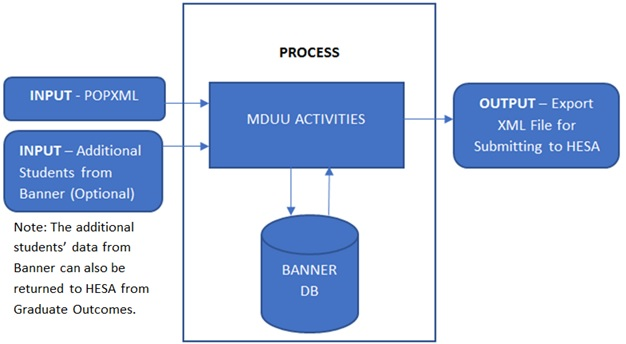

HESA Graduate Outcomes
® HESA, the central body responsible for collecting and compiling statistical data on Higher Education establishments in the UK, supports the collection of statistical data for transmission to HESA.
Graduate Outcomes Overview
The Graduate Outcomes Use content provides information for producing your HESA Graduate Outcomes return using the Banner HESA module. It includes details about using the Used optionally throughout the document to single source the product name. Banner HESA Mass Data Update Utility (MDUU) for processing these returns.
The Graduate Outcomes return includes a survey of graduates around 15 months after they complete their studies. To undertake this survey, providers will need to return accurate and comprehensive contact details for all of their graduates who fall into the target population.
The HESA Graduate Outcomes (SKAHGRO) page in 9x version and the SKADLHE page in 8x version are used to maintain the data needed for the Graduate Outcomes return.
- Process: This represents a set of tasks sharing a common business area. MDUU security allows you to associate users and user classes to a given process. If this functionality is activated, only users assigned to a given process will be able to execute this process.
- Task: This is a job that is carried out as part of a process, such as creating a HESA cohort or taking a snapshot of data from the original data sources and gathering them in more synthetic (eventually generated) tables.
- Activity: This is a job that is carried out as part of a task, such as a stage in cohort creation, a data copy, or a data transformation. An activity updates a single table.
Data collected
All HESA records are collected on the basis of the HESA reporting period, which determines the period of time the data being returned relates to. This ensures consistency across the data streams collected.
Process flow
The typical top-level process flow for HESA Graduate Outcomes return is shown in the following diagram.

Process tree
Institutions can use the ESC_HGO process tree for the HESA Graduate Outcomes return for the year 2017/18 onwards.
Graduate Outcomes Data Collection
Processing the HESA Graduate Outcomes return consists of the following tasks.
- Create the HESA Cohort from the population target file to return student contact details
- Process the snapshot and the extract
- Export the Graduate Outcomes returns
System parameters setup
You can use the seed data/system parameters listed in this section for HESA
System Parameter (GKAKSYS) table
The following system parameters are available in the GKAKSYS table.
| Field | Description | |
|---|---|---|
| HESA_GO_ADDR_TYPE | Value of the Address Type Code field in the STVATYP page | Type of address that the institutions want to return to HESA for student's address. Institutions can add only one address type value, else, system will throw an error while processing the activities. |
| HESA_GO_EMAIL_TYPE | Value of the Email Type/s field in the GTVEMAL page | Type of email address/es that the institutions want to return to HESA for student's email address. Institutions can add only up to 10 email address type values, else, system will throw an error while processing the activities. |
| HESA_GO_INTTEL | Value of the Telephone Type Code/s field in the STVTELE page | Type of international telephone number that the institutions want to return to HESA for student's international telephone number/s. Institutions can add only up to 10 telephone type values, else, system will throw an error while processing the activities. |
| HESA_GO_UKMOB | Value of the Telephone Type Code/s field in the STVTELE page | Type of UK mobile telephone number that the institutions want to return to HESA for student's UK mobile number/s. Institutions can add only up to 10 telephone type values, else, system will throw an error while processing the activities. |
| HESA_GO_UKTEL | Value of the Telephone Type Code/s field in the STVTELE page | Type of UK telephone number that the institutions want to return to HESA for student's UK telephone number/s. Institutions can add only up to 10 telephone type values, else, system will throw an error while processing the activities. |
LOV data support
List Of Values (LOV) data is loaded in the SKAHGRO page for the LOV fields from the HESA XML Schema Definition for the appropriate Graduate Outcomes data collection and year using the ESC_HSD_LOV process tree.
| Task Code | Task Description | Activity Code | Activity Description |
|---|---|---|---|
| ESC_HSD_LOV_HGO | Generates the LOV seed data for HGO, which gets displayed for the LOV fields in the SKAHGRO page in 9x version and SKADLHE in 8x version. | ESC_HSD_LOV_HLOV_PURGE | Purges SKRHLOV table |
|
ESC_HSD_LOV_XSD_REG |
Registers the XSD, the file given by HESA for the list of expected values. | ||
|
ESC_HSD_LOV_XSD |
Populates the SKRHLOV table from the XSD | ||
|
ESC_HSD_LOV_HGO_FDS |
Generates SKRUFDS data for the HGO fields | ||
| ESC_HSD_LOV_HGO_SSDT | Generate SKVSSDT LOV data for HGO fields |
Refer to the MDUU Processing for Banner HESA chapter of the Banner HESA Use content to learn more about the ESC_HSD_LOV processing tree.
Cohort Processing
Cohort Processing refreshes or updates a cohort for a HESA reporting period. Graduate Outcomes cohort processing performed by the Banner Mass Data Update Utility (MDUU) supports the use of the population target file only in XML format.
| Cohort Activity Name | Description |
|---|---|
| ESC_HGO_COHORT_XML | Loads data from the POPGO XML document into the the SKRHDGO holding table and finds the matching the SPRIDEN table record to establish the PIDM. |
| ESC_HGO_COHORT | Groups all the students, provided by Banner HESA in the POPXML file, and lists them on the SKAHCOH page. |
| ESC_HGO_CHRT_EXC_PURG | Deletes the records from the back end exception table (for cleanup purposes). |
| ESC_HGO_COHORT_EXC1 | Lists all the students from the POPXML target file to into the exception table, if their IDs do not match with the existing Banner IDs. |
| ESC_HGO_COHORT_EXC2 | Lists all the students from the POPXML target file to into the exception table if their HUSIDs do not match with the existing Banner HUSIDs. |
| ESC_HGO_COHORT_EXC3 | Lists all the students from the POPXML target file to into the exception table if their names do not match with the existing Banner names. |
Records that are already in the cohort are ignored; this means that a record already in the cohort will not be updated.
The following MDUU activities support Graduate Outcomes cohort processing.
Load POPXML
This activity calls the SKKHXML.FN_LOAD_SKRHDGO function, which parses the HESA population target XML document and loads the contents into PRGNREP.SKRHDGO ready to be used by the remaining cohort activities.
Activity details
| Process | ESC_HGO |
| Task | ESC_HGO_CHRT |
| Activity | ESC_HGO_COHORT_XML |
| Source Table | DUAL |
| Target Table | SKRHDGO |
Populate Cohort Data
This activity inserts all matched records from the SKRHDGO table (where the PIDM is not null) into the cohort. This activity does not overwrite existing cohort records.
Activity details
| Process | ESC_HGO |
| Task | ESC_HGO_CHRT |
| Activity | ESC_HGO_COHORT |
| Source Table | SKRHDGO |
| Target Table | SKRHCOH |
Purge Cohort Exception Table
This activity removes records from the SKRHDE1 table.
Activity details
| Process | ESC_HGO |
| Task | ESC_HGO_CHRT |
| Activity | ESC_HGO_CHRT_EXC_PURG |
| Source Table | SKRHDE1 |
| Target Table | SKRHDE1 |
Cohort Exception Report - Unmatched Records
This activity inserts exception reporting records into the SKRHDE1 table for non-matched records (where the PIDM is null). You can view the contents of this table using the MDUU Universal View (GKAPUNV) page.
Activity details
| Process | ESC_HGO |
| Task | ESC_HGO_CHRT |
| Activity | ESC_HGO_CHRT_EXC1 |
| Source Table | SKRHDGO |
| Target Table | SKRHDE1 |
Cohort Exception Report - Non-Matching HUSID
This activity inserts exception reporting records into the SKRHDE1 table for matched records where the HUSID in the population target file is not the same as the matching SKASPIN record. You can view the contents of this table using the MDUU Universal View (GKAPUNV) page.
Activity details
| Process | ESC_HGO |
| Task | ESC_HGO_CHRT |
| Activity | ESC_HGO_CHRT_EXC2 |
| Source Table | SKRHDGO SKBSPIN |
| Target Table | SKRHDE1 |
Cohort Exception Report - Non-Matching Names
This activity inserts exception reporting records into the SKRHDE1 table for matched records where the name in the population target table is not the same as a matching the SPAIDEN table record. You can view the contents of this table using the MDUU Universal View (GKAPUNV) page.
Activity details
| Process | ESC_HGO |
| Task | ESC_HGO_CHRT |
| Activity | ESC_HGO_CHRT_EXC3 |
| Source Table | SKRHDGO SPRIDEN |
| Target Table | SKRHDE1 |
Pre-Run Processing
This activity checks for the student records in the SKRHDGO and SKRHCOH tables and populates the student data received from the population target file to the SKAHGRO page in 9x and SKADLHE in 8x versions.
Pre-run activity details
| Process | ESC_HGO |
| Task | ESC_HGO_PRERUN |
| Activity | ESC_HGO_PRE_CONTACT_DET |
| Source Table | SKRHDGO SKRHCOH |
| Target Table | SKRHDGO |
Snapshot and Extract Processing
The MDUU activities described in this section support Graduate Outcomes snapshot and extract processing activities. You can use the MDUU Universal View (GKAPUNV) page to view or update data in any of the snapshot or extract target tables mentioned in this chapter.
Snapshot activity details
| Finds SKRHDGO records and matching SKBSPIN records that match the cohort. | |
| Process | ESC_HGO |
| Task | ESC_HGO_SNAPSHOT |
| Activity | ESC_HGO_SNA_CONTACT_DET |
| Source Table | SKRHGRO SKRHCOH SKBHMPD SPRIDEN |
| Target Table | SKRHSGO |
Extract activity details
| Finds snapshot records for the current cohort. | |
| Process | ESC_HGO |
| Task | ESC_HGO_EXTRACT |
| Activity | ESC_HGO_EXT_CONTACT_DET |
| Source Table | SKRHSGO |
| Target Table | SKRHEGO |
Export Processing
The Graduate Outcomes export processing using the ESC_HGO_EXP_CONTACT_DET activity populates the student data into the extract data table (SKRHEXM).
| Cohort Activity Name | Description |
|---|---|
| ESC_HGO_EXP_PURGE | Purges the SKRHEXM table records previously created by the export process. This is used at the start of the task to remove data from previous executions. |
| ESC_HGO_EXP_START | Starts the export by defining the header for the export file. |
| ESC_HGO_EXP_CONTACT_DET | Defines the body for the export file based on the data collected from the extract activities. |
| ESC_HGO_EXP_END | Defines the footer for the export file (XML file). |
| ESC_HGO_EXP_SAVE_FILE | Gathers the data from the previous export activities (from the SKRHEXM table) into one XML file. |
| ESC_HGO_EXP_POST_PURGE | Remove multiple rows being created in the export XML file. |
| ESC_HGO_EXP_SAVETOCLOB | Loads the XML file into the SKRHEXM table. |
Export activity details
| Process | ESC_HGO |
| Task | ESC_HGO_EXPORT |
| Activities | ESC_HGO_EXP_PURGE ESC_HGO_EXP_START ESC_HGO_EXP_CONTACT_DET ESC_HGO_EXP_END ESC_HGO_EXP_SAVE_FILE ESC_HGO_EXP_SAVETOCLOB |
| Source Table | DUAL |
| Target Table | SKRHEXM |
Tasks
A list of tasks performed using the Graduate Outcomes return.
Create cohort records
Create a student cohort record.
Procedure
Export Graduate Outcomes data to HESA
When the snapshot and extract processes are completed successfully, export the Graduate Outcomes data to HESA.
Procedure
View student contact details from POPXML
View student data from the POPXML target file.
Procedure
Add student contact details
Add student records that are not in the POPXML target file.